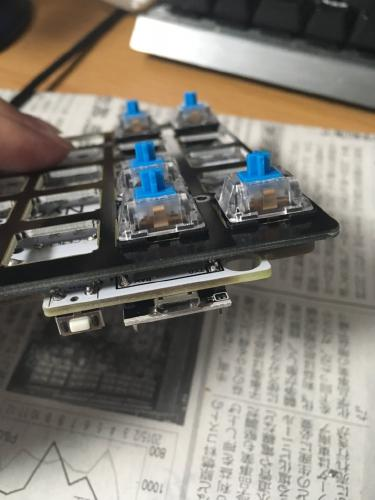
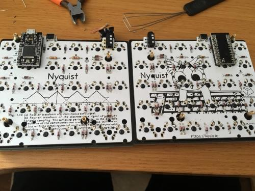

Nyquistキーボードを作ったので僕の失敗談を交えつつBuild logを書いていこうと思います。
これを読んだ皆さんはしょうもないことでミスって基板を書い直さなくて良いようにBuild logを穴が開くほど読んでください。
それと僕は入ってないんですが自作キーボードDiscordなるものがあるらしいのでわからなくなったらそういうところで質問するのもいいと思います。
それではどうぞ。
準備
必要な部品
- キートップ (aliexpress)
- キースイッチ(aliexpress)
- 基板, ケース (keeb.io)
- ProMicro x 2 (keeb.io)
- TRRSケーブル x 1 (amazon)
- Micro USBケーブル x 1 (keeb.io)
あったら良いものとか
- クッションゴム
- セメダイン (ProMicroの端子固定用)
- 4.7kΩの抵抗(I2C用)
作るに当たって必要になる道具
- 半田ごて一式
- ハンダ吸い取り線
ハマりポイント
ここからが重要なハマりポイントの説明になります。僕がハマったポイント、調べてるときによく見かけたハマりポイントを列挙して説明するので8億回くらい読んでください。
- ダイオードの向き
電気電子の人からしたら何言ってるんだという感じかもしれませんがダイオードは向きがあります。ダイオードのカソード（黒い帯がついてる方）はNyquistの基板のパターンが四角になってる方に実装しないといけないです。ダイオードを取り外すのはそこまで難しくないですが、なにぶん数が多いので間違って実装すると面倒です。
- ProMicroをつける順番
これは僕がハマったやつです。ちゃんとBuild Log読んでたら絶対起こり得ないことだとは思うんですが抵抗なくしてクソーっていいながら作業してたら間違えました。これはProMicroの方を先につけてしまうとキースイッチをつけられなくなってしまうという簡単なことです。ただこれを間違えるとProMicroの取り外しとかいう地獄みたいな作業が待ってるので絶対にミスしないことをおすすめします。ちなみに僕はProMicroのピンヘッダ取るの諦めて基板を書い直しました。
- ProMicroの端子
調べてるときに結構もげてる画像を見かけました。先ほど説明したようにProMicroのピンヘッダの取り外しは本当に地獄なので端子がとれてProMicroの交換をしなくていいように接着剤で固めるのをおすすめします。
- ProMicroのJ1
僕のProMicroはそうではなかったのですがたまにProMicroのJ1がブリッジされててうまく動作しないことがあるようです。ブリッジされてるようならハンダ吸い取り線などで取ってください。
- ProMicroの裏表
両方同じ向きで実装しちゃダメらしいです。(自分はミスしてないので両方同じ向きで実装するとどうなるのかわかってない)
- ハンダの盛りすぎ
これは他の人が書いているのは見たことはないけど自分が少し困ったこと。ハンダを盛りすぎていてキースイッチが奥まで押し込めなかった。（隙間からハンダ入れて少し吸った）キースイッチの実装をする前に基板全体のハンダ盛りすぎているところをチェックすると良いと思います。
How to build
簡単な作業ログです。 作ってる途中にあんまり写真取ってなくて画像が少ないのですがご了承ください。
ダイオードの取り付け
まずはダイオードの取り付けです。ここで注意すべきは先ほど説明したダイオードの向きです。必ず黒い方をパターンが四角になっているところに実装しましょう。
TRRS, ピンヘッダ、リセットスイッチの取り付け
画像がなくて申し訳ないんですがパパっと実装するだけという感じです。気をつける点としては同じ向きに実装してしまわないということくらいですかね。
キースイッチの取り付け
!!! ProMicroの取り付け前に必ず行ってください。 この作業自体で特に注意することはないです。四隅から実装して浮かないように実装していくだけです。
ProMicroの取り付け
ここまでくればもうほとんど終わったようなものです。ここで注意するのはProMicroの裏表です。同じ向きに実装してしまわないように気をつけて画像のように実装しましょう。 
ProMicroにqmkを書き込む
今回はarchlinuxについてのみ説明します。Mac, Ubuntuとかは公式のドキュメントに従うだけなのでドキュメントよんでください。
$ git clone https://github.com/qmk/qmk_firmware.git
$ pacman -S –noconfirm base-devel avr-gcc avr-binutils arv-libc dfu-util arm-none-eabi-gcc arm-none-eabi-binutils arm-none-eabi-newlib git diffutils avrdude
$ cd qmk_firmware
$ sudo make nyquist:default:avrdude
だいたいこんな感じです。最後のコマンドの実行時にリセットを求められるので取り付けたボタンを押してください。ここまでの作業で問題がなければ無事書き込まれるはずです。 あとはqmk_firmware/keyboards/nyquistにあるプロファイルをいじってお好きなキー配置を楽しんでください。
最後に
初の自作キーボード、失敗したりもしましたが総じて楽しかったです。他にも色々種類があるようなので作ってみたさがある。
そういえば調べているときにHoltite Socketなるものを見つけて気になっているので次回作る機会があればこういうのにも挑戦してみたい。